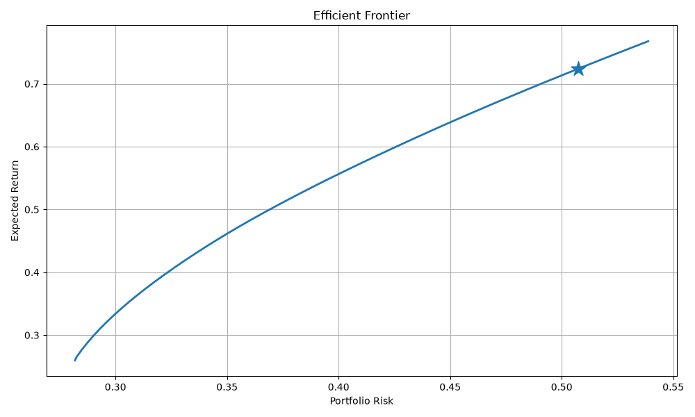

Real-Time Environmental Data Analytics Pipeline
Built a distributed analytics pipeline using Kafka, Spark, Airflow, and PostgreSQL to process simulated sensor event streams with low-latency anomaly detection

I build high-performance data systems and machine learning pipelines, with experience designing distributed streaming architectures and scalable backend applications.
Built a distributed analytics pipeline using Kafka, Spark, Airflow, and PostgreSQL to process simulated sensor event streams with low-latency anomaly detection

Developed an end-to-end quantitative trading research platform using Python, PostgreSQL, and portfolio optimization techniques. Implemented momentum-based trading strategies, backtesting, multi-asset portfolio construction, parameter optimization, and Efficient Frontier analysis using historical market data.

MRI signal processing pipeline using FFT and ML to extract frequency-domain features Improves efficiency and scalability of spectroscopy data analysis.

Full-stack web platform with Flask and SQLite for internship discovery Features database-backed search and scalable backend architecture.

Built a distributed chatbot system using LangFlow and Apache Cassandra for scalable conversation storage and retrieval.
I build scalable software systems, data platforms, and quantitative analytics applications. My experience includes distributed data pipelines, machine learning workflows, backend development, and quantitative finance research.
My projects span real-time stream processing, portfolio optimization, algorithmic trading research, medical imaging analysis, and full-stack web development.
I am particularly interested in Software Engineering, Data Engineering, Machine Learning, and Quantitative Research opportunities where I can combine strong programming skills with mathematical and statistical problem solving.
Email: corneliusmulyokela@gmail.com
LinkedIn: linkedin.com/in/cornelius-mulyokela-a65366225
GitHub: github.com/Cornelius-Mulyo